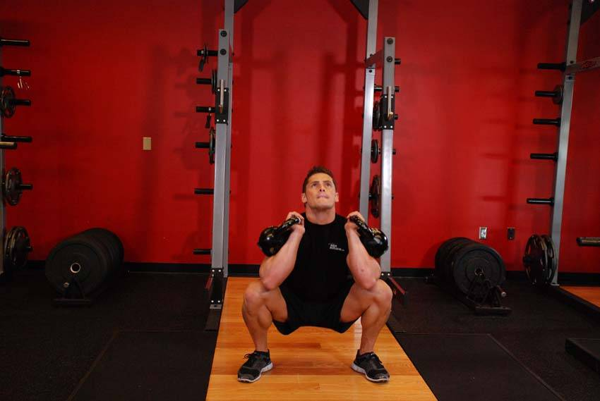

- Clean two kettlebells to your shoulders. Clean the kettlebells to your shoulders by extending through the legs and hips as you pull the kettlebells towards your shoulders. Rotate your wrists as you do so.
- Looking straight ahead at all times, squat as low as you can and pause at the bottom. As you squat down, push your knees out. You should squat between your legs, keeping an upright torso, with your head and chest up.
- Rise back up by driving through your heels and repeat.